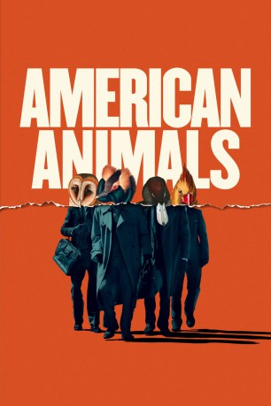

#10464 American Animals
 gesehen am 18.01.2019
gesehen am 18.01.2019
 
 IMDB-Wertung: 7.0 / 10
IMDB-Wertung: 7.0 / 10  Tomatometer: 88
Tomatometer: 88  Metascore: 68
Metascore: 68 
Vier bislang völlig unbescholtene Studenten planen 2004 einen der spektakulärsten Diebstähle der US-Geschichte. Nur mit der Erfahrung aus vielen Heist-Movies ausgestattet, wollen sie ein kostbares, viele Millionen wertes Buch aus der Sammlung ihrer Universität klauen. Doch die Realität ist irgendwie viel komplizierter als die Welt von Danny Ocean & Co. Ihre Story ist unglaublich … und wahr.
Jahr: 2018
Dauer: 116 Minuten
FSK: 12
Land: England Studio: Ascot Elite Entertainment GroupTonspuren: DD5.1 - ,
Untertitel: Deutsch, Englisch,
Auflösung: 1080p (1920x816) Größe: 9277 MB
Genre: Drama, Krimi
Regisseur: Bart Layton
Drehbuch: Bart Layton
Soundtrack: Anne Nikitin
Darsteller:
 Evan Peters als Warren
Evan Peters als Warren Blake Jenner als Chas
Blake Jenner als Chas Barry Keoghan als Spencer
Barry Keoghan als Spencer- Jared Abrahamson als Eric
- Karen Wheeling Reynolds als Female Art Professor
 James Rackley als Active
James Rackley als Active- Drew Starkey als Frat Boy
- Anthony J. Police als Man with Gun
 Ann Dowd als Betty Jean 'BJ' Gooch
Ann Dowd als Betty Jean 'BJ' Gooch- Abigail Dolan als Special Collections Student
 Kevin L. Johnson als Scruffy Counterfeiter
Kevin L. Johnson als Scruffy Counterfeiter- Mike Stoudt als Local Radio DJ
 Gary Basaraba als Warren Lipka Senior
Gary Basaraba als Warren Lipka Senior Lara Grice als Mrs. Lipka
Lara Grice als Mrs. Lipka Udo Kier als Mr. Van Der Hoek
Udo Kier als Mr. Van Der Hoek- Fedor Steer als Dutchman in Café
 Jack Landry als Economics Lecturer
Jack Landry als Economics Lecturer Wayne Duvall als Bill Welton
Wayne Duvall als Bill Welton- Blaque Fowler als Costume Shop Owner
- Tonya Bludsworth als Exam Professor
- Gretchen Koerner als Exam Professor 2
- Whitney Goin als Mrs. Allen
 Robert C. Treveiler als Mr. Reinhard
Robert C. Treveiler als Mr. Reinhard- Jane McNeill als Mrs. Reinhard
 Al Mitchell als Supermarket Security
Al Mitchell als Supermarket Security- Cowboy als FBI Dorm
- Sophia Alongi als Younger Sister (uncredited)
- Cameran Bellamy als College Student (uncredited)
- Braden Bunch als Graduation Photographer (uncredited)
- Jason Caceres als Pledge (uncredited)
- Brian Cole als Man Dancing in Bar (uncredited)
- Steven 'Trainset' Curtis als Blues Bar Patron (uncredited)
- John Demers als Used Car Salesman (uncredited)
- Elijah Everett als Transy Security (uncredited)
 Willie Tyrone Ferguson als Chinese Restaurant Patron (uncredited)
Willie Tyrone Ferguson als Chinese Restaurant Patron (uncredited)- Jeremiah Fewell als Airport Traveler (uncredited)
- Robert Fortunato als FBI Agent (uncredited)
 Sterling Hayden als Himself (archive footage) (uncredited)
Sterling Hayden als Himself (archive footage) (uncredited)- Alec Heroux als Frat Boy (uncredited)
- Grant Lane als Father of Graduate (uncredited)
- David Lowe als Pool Player #1 (uncredited)
- Ben McIntire als Reinhard Sibling (uncredited)
- Kevin Murray als Bar Patron (uncredited)
- Kevin J. O'Connor als Faculty (uncredited)
- Tim Olcott als Short Male Administrative Assistant (uncredited)
- Stephen Royal Phillips als Police Officer (uncredited)
- Morgan Prewitt als Girl in Hallway (uncredited)
- Stacy Rabon als Mean Betty Jean (uncredited)
- Kate Roth als Shopper (uncredited)
- Josh Royston als Bartender (uncredited)
Datei: X:\2018(A-F)\American Animals (2018, FSK12, 1920x816).mkv seit 10.01.2019
Festplatte: HD 2017(A-Z)-2018(A-F)
 Es gibt insgesamt 151 Filme in der Gruppe '2018(A-F)'
Es gibt insgesamt 151 Filme in der Gruppe '2018(A-F)'